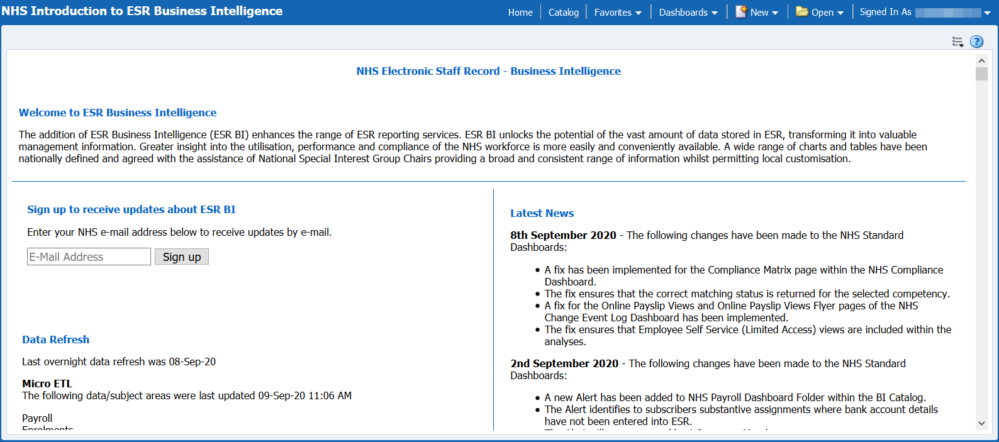

Welcome to the ESRBI Online Dashboard Guide
This guide lists all of the National Dashboards available in ESRBI which are centrally maintained by the NHS ESR Central Team. Use the navigation on the left to browse the dashboards, or the search at the top left to find individual dashboards or analyses.
Where can I find further guidance for ESRBI?
When accessing ESRBI users are presented with the ‘Introduction to ESR Business Intelligence’ dashboard. This contains links to further guidance, a list of the latest news and updates to the national dashboards and details when data in ESRBI was last updated:

A number of educational videos for ESRBI are available on the ESR Hub Education Page.
National Dashboards Directory
Select any dashboard below or from the left navigation menu:
- Absence Analysis Dashboard
- Absence Dashboard
- Appraisal Reviews Dashboard
- Appraisals and PMP Dashboard (unarchived)
- Assignment Changes Dashboard (unarchived)
- Bank and Agency Administration Dashboard
- Care Certificate Dashboard (unarchived)
- Certifications Analysis Dashboard
- Change Event Log Dashboard
- Compliance Dashboard
- Compliance Trending Dashboard
- Data Quality Dashboard
- Driving License Checks Dashboard
- Education and Learning Dashboard (unarchived)
- Element Entries Dashboard
- Employee Relations Dashboard
- Employment Checklist Dashboard
- Financial Cost Analysis Dashboard
- HR Forms Dashboard
- IAT Dashboard
- Learning Administration Dashboard
- Management Overview Dashboard
- Medical and Dental Dashboard
- National Returns Dashboard (unarchived)
- Pay Bill Dashboard
- Payroll Dashboard
- Payroll Run Analysis Dashboard
- Pensions Dashboard
- Position Analysis Dashboard
- Professional Registrations Dashboard
- Qualifications Dashboard
- Recruitment Dashboard
- Staff Movements Dashboard (unarchived)
- Staff Movements Monitoring Dashboard (unarchived)
- Staff Requirements Dashboard (unarchived)
- Staff in Post Dashboard
- Travel And Subsistence Dashboard (unarchived)
- User Administration Dashboard
- Vehicle Management Dashboard
- Workforce Information Verifier Dashboard (unarchived)
- Workforce Profile Dashboard